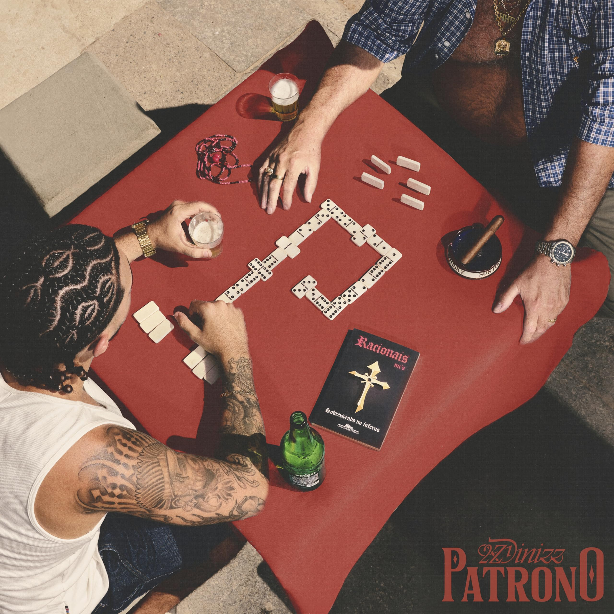
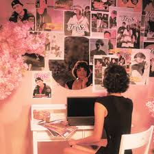

A música "Foi assim" de Sotam aborda como o amor pode transformar pessoas, mesmo quando o relacionamento começa com desconfiança e julgamentos. No trecho “Você duvidava da minha cara, me chamava de canalha / Mas hoje o tempo passou e olha só o que a gente fez”, fica claro que o casal superou as impressões negativas iniciais e construiu uma relação sólida. Esse desenvolvimento mostra que o convívio e o afeto podem mudar percepções e fortalecer laços.
A letra destaca gestos simples do cotidiano, como levar flores escondidas ou buscar a parceira em casa,reforçando que o amor se manifesta nos detalhes.

